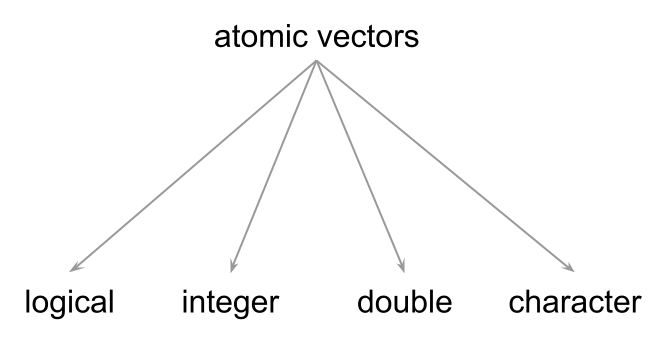

5 Vectors
In order to enjoy and exploit R as a computational tool, one of the first things you need to learn about is the objects R provides to handle data. The formal name for these programming elements is data objects also known as data structures. They form the ecosystem of data containers that we can use to handle various types of data sets, and be able to operate with them in different forms.
I’m going to use financial math examples as an excuse to introduce and explain the material. I’ve found that having a common theme helps avoiding falling into the “teaching trap” of presenting isolated examples in a vacuum.
5.1 Motivation: Compound Interest
I would like to ask you if you have any of the following accounts:
Savings account?
Retirement account?
Brokerage account?
Don’t worry if you don’t have any of these accounts. I certainly didn’t have any of those accounts until I started my first job right after I finished college.
Anyway, let’s consider a hypothetical scenario in which you have $1000, and you decide to deposit them in a savings account that pays you an annual interest rate of 2%. Assuming that you leave that money in the savings account, an important question could be:
How much money will you have in your savings account one year from now?
The answer to this question is given by the compound interest formula:
\[ \text{deposit} + \text{paid interest} = \text{amount in one year} \]
In this example, you deposit $1000, and the bank pays you 2% of $1000 = $20. In mathematical terms, we can write the following equation to calculate the amount that you should expect to have in your savings account within a year:
\[ 1000 + 1000 (0.02) = 1000 \times (1 + 0.02) = 1020 \]
You can confirm this by running the following R command:
# in one year
1000 * (1.02)
#> [1] 1020Now, if you leave the $1020 in the savings account for one more year, assuming that the bank keeps paying you a 2% annual return, how much money will you have at the end of the second year?
Well, all you have to do is repeat the same computation, this time by letting the $1020—accumulated during the first year—compound for one more year:
\[ 1020 + 1020 (0.02) = 1020 \times (1 + 0.02) = 1040.40 \]
which in R can be computed as:
# in two years
1020 * (1.02)
#> [1] 1040.4How much money will you have at the end of three years? Again, take the amount saved at the end of year 2, and compund it for one more year:
\[ 1040.4 + 1040.4 (0.02) = 1040 \times (1 + 0.02) = 1061.208 \]
We can confirm this in R by running the following command:
# in three years
1040.40 * (1.02)
#> [1] 1061.2085.1.1 Creating Objects
Often, it will be more convenient to create objects , also referred to as variables, that store both input and output values. To do this, type the
name of the object, followed by the equals sign =, followed by the assigned
value. For example, you can create an object d for the initial deposit of
$1000, and then inspect the object by typing its name:
# deposit 1000
d = 1000
d
#> [1] 1000Alternatively, you can also use the arrow operator <-, technically known as
the assignment operator in R. This operator consists of the left-angle
bracket (i.e. the less-than symbol) and the dash (i.e. hyphen character).
# interest rate of 2%
r <- 0.02
r
#> [1] 0.02Assignment Statements
All R statements where you create objects are known as “assignments,” and they have this form:
object <- valuethis means you assign a value to a given object;
you can read the previous assignment as “r gets 0.02.”
RStudio has a keyboard shortcut for the arrow operator <-:
Alt + - (the minus sign).
Here are more assignments for each of the savings amounts at the end of years 1, 2, and 3:
# amounts at the end of years 1, 2, and 3
a1 = d * (1 + r)
a2 = a1 * (1 + r)
a3 = a2 * (1 + r)
a3
#> [1] 1061.208Use Descriptive Names
While the names of these objects—d, r, a1, etc—are good for a
computer, they can be a bit cryptic for a human being. To be more transparent,
we can use more descriptive names, for example:
# inputs
deposit = 1000
rate = 0.02
# amounts at the end of years 1, 2, and 3
amount1 = deposit * (1 + rate)
amount2 = amount1 * (1 + rate)
amount3 = amount2 * (1 + rate)
amount3
#> [1] 1061.208The names of the above objects are good for a computer and also for a human being (that reads English).
Whenever possible, make an effort to use descriptive names. While they don’t matter that much for the computer, they definitely can have a big impact on any person that takes a look at the code. As it turns out, we tend to spend more time reviewing and reading code than writing it. So do yourself (and others) a favor by using descriptive names for your objects.
Combining various objects into a single one
We can store various computed values in a single object using the combine or
catenate function c(). Simply list two or more objects inside this function,
separating them by a comma ,. Here’s an example for how to use c() to
define an object amounts containing the amounts at the end of years 1, 2,
and 3.
# inputs
deposit = 1000
rate = 0.02
# amounts at the end of years 1, 2, and 3
amount1 = deposit * (1 + rate)
amount2 = amount1 * (1 + rate)
amount3 = amount2 * (1 + rate)
# combine (catenate) in a single object
amounts = c(amount1, amount2, amount3)
amounts
#> [1] 1020.000 1040.400 1061.208So far we have created a bunch of objects. You can use the list function ls()
to display the names of the available objects. But what kind of objects are we
dealing with?
It turns out that all the objects we have so far are vectors.
5.2 About R Vectors
Vectors are the most basic kind of data objects in R. Pretty much all other R data objects are derived (or are built) from vectors. This is the reason why I personally like to say that, to a large extent, R is a vector-based programming language.
Based on my own experience, becoming proficient in R requires a solid understanding of the properties and behavior of R vectors.
To give you a mental picture of what a vector could like, you can think of a vector as set of contiguous “cells” of data, like in the diagram below:
They can be of any length (including 0), and the starting position or index is always number 1.
5.3 Vectors are Atomic Objects
The first thing you should learn about R vectors is that they are consired to be atomic structures, which is just the fancy name to indicate that all the elements in a vector are of the same type.
R has four main basic types of atomic vectors:
logicalintegerdoubleorrealcharacter

There are also two additional types that are less commonly used: complex
(for complex numbers), and raw which is a binary format used by R.
Here are simple examples of the four common types of vectors:
# logical
a = TRUE
# integer
x = 1L
# double (real)
y = 5
# character
b = "yosemite"Logical values, known as boolean values in other languages, are TRUE and
FALSE. These values can be abbreviated by using their first letters T and
F, although I discourage you from doing this because it can make code review
a bit harder.
Integer values have an awkward syntax. Notice the appended L when assigning
number 1 to object x. This is not a typo. Rather, this is the syntax used in
R to indicate that a number (with no decimals) is an integer.
If you just simply type a number like 1 or 5, even though cosmetically
they correspond to the mathematical notion of integer numbers, R stores those
numbers as double type. So if you want to declare those numbers as type
integer, you should append an upper case letter L to encode them as 1L
and 5L.
Character types, referred to as strings in other languages, are specified by
surrounding characters within quotes: either double quotes "a" or single
quotes 'b'. The important thing is to have an opening and a closing quote
of the same kind.
5.3.1 Types and Modes
How do you know that a given vector is of a certain data type? For better or worse, there is a couple of functions that allow you to answer this question:
typeof()mode()
Although not commonly used within the R community, my recommended function
to determine the data type of a vector is typeof(). The reason for this
recommendation is because typeof() returns the data types previously listed
which are what most other programming languages use:
typeof(deposit)
typeof(rate)
typeof(amount1)You should know that among the R community, many useRs don’t really talk about
types. Instead, because of historical reasons related to the S language—on
which R is based—you will often hear useRs talking about modes as given by
the mode() function:
mode(deposit)
mode(rate)
mode(amount1)mode() gives the storage mode of an object, and it actually relies on the
output of typeof().
When applied to vectors, the main difference between mode() and typeof() is
that mode() groups together types "double" and "integer" into a single
mode called "numeric".
Figure 5.1: Data types “integer” and “double” correspond to “numeric” mode
5.3.2 Special Values
In addition to the four common data types, R also comes with a series of special values
NULLis the null object (it has length zero)NA, which stands for Not Available, indicates a missing value. By default, typingNAis stored as a logical value. But there are also special types of missing values.NA_integer_NA_real_NA_character_
NaNindicates Not a Number. An example of this value is the output returned by computing the square root of a negative number:sqrt(-5)Infindicates positive infinite, e.g.100/0-Infindicates negative infinite, e.g.-100/0
5.3.3 Length of Vectors
The simplest kind of vectors are single values—i.e. vectors with just one
element. For example, objects such as deposit and rate are one-element
vectors
length(deposit)
#> [1] 1
length(rate)
#> [1] 1In most other languages, a number like 5 or a logical TRUE are usually
considered to be “scalars.” R, however, does not have the concept of “scalar,”
instead the simplest data structure is that of a one-element vector.
5.4 Creating Vectors
We’ve already seen how to create simple vectors, that is, vectors containing just one element (i.e. length-1 vectors)
a = TRUE # logical
x = 1L # integer
y = 5 # double (real)
b = "abc" # character5.4.1 Creating vectors with c()
Among the main functions to work with vectors we have the combine function
c(). This is the workhorse function to create vectors of length greater
than one. Here’s how to create a vector flavors with some ice-cream flavors:
flavors <- c('lemon', 'vanilla', 'chocolate')
flavors
#> [1] "lemon" "vanilla" "chocolate"Basically, you call c() and you type in the values, separating them by
commas.
5.4.2 Numeric Sequences
A common situation when creating vectors involves creating numeric sequences.
If the numeric sequence is short and simple, it could be created with the
combine function c(), for example:
s1 = c(1, 2, 3, 4)
s1
#> [1] 1 2 3 4Often, you will have to create less simpler and/or longer sequences. For these purposes there are two useful functions:
the colon operator
":"the sequence function
seq()and its siblingsseq.int(),seq_along()andseq.len()
Sequences with :
The colon operator : lets you create numeric sequences by indicating the
starting and ending values. For instance, if you want to generate an integer
sequence starting at 1 and ending at 10, you use this command:
ints = 1:10
ints
#> [1] 1 2 3 4 5 6 7 8 9 10Notice that the the colon operator, when used with whole numbers, will produce an integer sequence
typeof(ints)
#> [1] "integer"However, when the starting value is not a whole number, then the generated
sequence will be of type double, with unit-steps. For example:
1.5:5.5
#> [1] 1.5 2.5 3.5 4.5 5.5Run the following commands to see the how R generates different sequences:
1.5:5
1.5:5.1
1.5:5.5
1.5:5.9You can also create a decreasing sequence by starting with a value on the
left-hand side of : that is greater than the value on the right-hand side:
# decreasing (reversed) sequence
10:1
#> [1] 10 9 8 7 6 5 4 3 2 1Sequences with seq()
In addition to the colon operator, R also provides the more generic seq()
function for creating numeric sequences. This function comes with a couple of
parameters that let you generate sequences in various forms.
The simplest usage of seq() involves passing values for the arguments from
(the starting value) and to (the ending value):
# equivalent to 1:10
seq(from = 1, to = 10)
#> [1] 1 2 3 4 5 6 7 8 9 10As you can tell, the sequence is created with one unit-steps. But this can
be changed with the by argument. Say you want steps of two-units:
seq(from = 1, to = 10, by = 2)
#> [1] 1 3 5 7 9Now, what if you want a decreasing sequence, for example 10, 9, …, 1?
You can also use seq() to achieve this goal. The starting value from is 10,
the ending value to is 1, and the step size by has to be -1
seq(from = 10, to = 1, by = -1)
#> [1] 10 9 8 7 6 5 4 3 2 1Sometimes you may be interested in creating a sequence of a specific length.
When this is the case, you need to use the length.out argument. For example,
say we want to start with 2, getting the sequence of the first six even numbers.
One way to obtain this sequence is with from = 2, steps of size by = 2,
and a length of length.out = 6
seq(from = 2, length.out = 6, by = 2)
#> [1] 2 4 6 8 10 125.4.3 Replicated Vectors
Another interesting function for creating repeated sequences is rep(). This
function takes a vector as the main input, and then it
optionally takes various arguments: times, length.out, and each.
rep(1, times = 5) # repeat 1 five times
#> [1] 1 1 1 1 1
rep(c(1, 2), times = 3) # repeat 1 2 three times
#> [1] 1 2 1 2 1 2
rep(c(1, 2), each = 2)
#> [1] 1 1 2 2
rep(c(1, 2), length.out = 5)
#> [1] 1 2 1 2 1Here are some more complex examples:
rep(c(3, 2, 1), times = 3, each = 2)
#> [1] 3 3 2 2 1 1 3 3 2 2 1 1 3 3 2 2 1 15.5 Coercion
Another fundamental concept that you should learn about vectors is that of coercion. This has to do with the mechanism that R uses to make sure that all the elements in a vector are of the same data type.
There are two coercion mechanisms or approaches:
implicit coercion rules
explicit coercion functions
5.5.1 Implicit Coercion Rules
Implicit coercion is what R does when we try to combine values of different types into a single vector. Here’s an example:
mixed <- c(TRUE, 1L, 2.0, "three")
mixed
#> [1] "TRUE" "1" "2" "three"In this command we are mixing different data types: a logical TRUE, an integer
1L, a double 2.0, and a character "three". Now, even though the input
values are of different data flavors, R has decided to convert everything into
type "character". Technically speaking, R has implicitly coerced the
values as characters, without asking for our permission and without even
letting us know that it did so.
If you are not familiar with implicit coercion rules, you may get an initial impression that R is acting weirdly, in a nonsensical form. The more you get familiar with R, you will notice some interesting coercion patterns. But you don’t need to struggle figuring out what R will do. You just have to remember the following hierarchy:
\[ \mathsf{character > double > integer > logical} \]
Here’s how R works in terms of coercion:
characters have priority over other data types: as long as one element is a character, all other elements are coerced into characters
if a vector has numbers (double and integer) and logicals, double will dominate
finally, when mixing integers and logicals, integers will dominate
5.5.2 Explicit Coercion Functions
The other type of coercion mechanism, known as explicit coercion, is done when you explicitly tell R to convert a certain type of vector into a different data type by using explicit coercion functions:
as.integer()as.double()as.character()as.logical()
Depending on the type of input vector, and the coercion function, you may achieve what you want, or R may fail to convert things accordingly.
We can take deposit, which is of type double, and convert it into an integer
with no issues:
int_deposit = as.integer(deposit)
int_deposit
#> [1] 1000Interestingly, the way an integer number is displayed is exactly the same
as its double version. To confirm that int_deposit is indeed of type
integer you can use the is.integer() function
is.integer(deposit)
#> [1] FALSE
is.integer(int_deposit)
#> [1] TRUEWhat about trying to convert a character string such as "string" into an
integer? You can try to apply as.integer() but in this case the attempt is
fruitless:
as.integer("string")
#> Warning: NAs introduced by coercion
#> [1] NA5.6 Exercises
1) Consider the data—about so-called Terrestrial planets—provided in the table below. These planets include Mercury, Venus, Earth, and Mars. They are called terrestrial because they are “Earth-like” planets in contrast to the Jovian planets that involve planets similar to Jupiter (i.e. Jupiter, Saturn, Uranus and Neptune). The main characteristics of terrestrial planets is that they are relatively small in size and in mass, with a solid rocky surface, and metals deep in its interior.
| planet | gravity | daylength | temp | moons | haswater |
|---|---|---|---|---|---|
| Mercury | 3.7 | 4222.6 | 167 | 0 | FALSE |
| Venus | 8.9 | 2802 | 464 | 0 | FALSE |
| Earth | 9.8 | 24 | 15 | 1 | TRUE |
| Mars | 3.7 | 24.7 | -65 | 2 | FALSE |
Create vectors for each of the columns in the data table displayed above, according to the following data-type specifications:
planet: character vectorgravity: real (i.e. double) vector (\(m/s^2\))daylength: real (i.e. double) vector (hours)temp: integer vector (mean temperature in Celsius)moons: integer vector (number of moons)haswater: logical vector indicating whether a planet has known bodies of liquid water on its surface
2) Refer to the vectors created in the previous question. Without running
any R commands, try to guess the data type—as returned by typeof()—if you
had to create a new vector by combining, using the function c(), the
following:
combine
planetswithgravitycombine
planetswithtempcombine
planetswithhaswatergravitywithdaylengthcombine
gravitywithtempcombine
tempwithmoonscombine
tempwithhaswater
3) What is the data type—as returned by typeof()—of each of the
following vectors. Try guessing the data type without running any commands.
x: wherex <- c(TRUE, FALSE)y: wherey <- c(x, 10)z: wherez <- c(y, 10, "a")
4) What is the data type—as returned by typeof()—of each of the
following vectors. Try guessing the data type without running any commands.
x: wherex <- c('1', '2', '3', '4')y: wherey <- (x == 1)z: wherez <- y + 0w: wherew <- c(x, "5.5")yz1: whereyz1 <- c(y, z, pi)
5) How do you use the function seq() to create the following vector?
[1] 1.0 1.1 1.2 1.3 1.4 1.5 1.6 1.7 1.8 1.9 2.06) Write a command using the function rep() and the input vector 1:3 to
create the following vector:
[1] 1 1 2 2 3 37) Write a command using the function rep() and the input vector 1:3 to
create the following vector:
[1] 1 2 3 1 2 38) Suppose y <- c(1, 4, 9, 16, 25). Write down the R command to return a
vector z, in which each element of z is the square root of each element of
the vector y.
9) A student is trying to implement the following formula in R:
\[e^{\frac{-(X - \mu)^2}{2 \sigma^2}}\]
However, the student gets unexpected results when using the code:
exp(-(x - mu)^2 / 2 * sigma^2)Explain what the problem is, and correct the code.